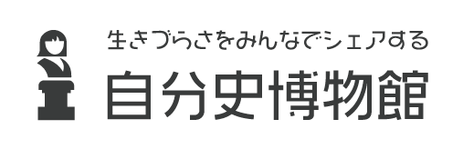

展示一覧をみる
ログイン
簡単に導入できる！CSS Animation delayの使い方5
Q. あなたは五感の中でどれが一番大切ですか?
A. 僕は目が大切だと思います。大学で視覚の補綴の研究をしていて、目の大切さは常々実感しています！
Q. あなたは五感の中でどれが一番大切ですか?
A. 僕は目が大切だと思います。大学で視覚の補綴の研究をしていて、目の大切さは常々実感しています！
Q. あなたは五感の中でどれが一番大切ですか?
A. 僕は目が大切だと思います。大学で視覚の補綴の研究をしていて、目の大切さは常々実感しています！
共感した！